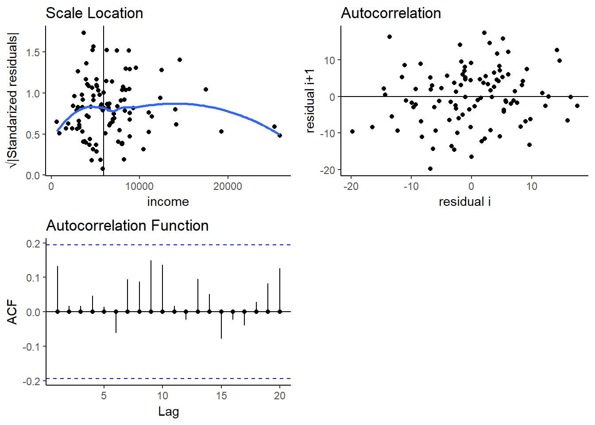
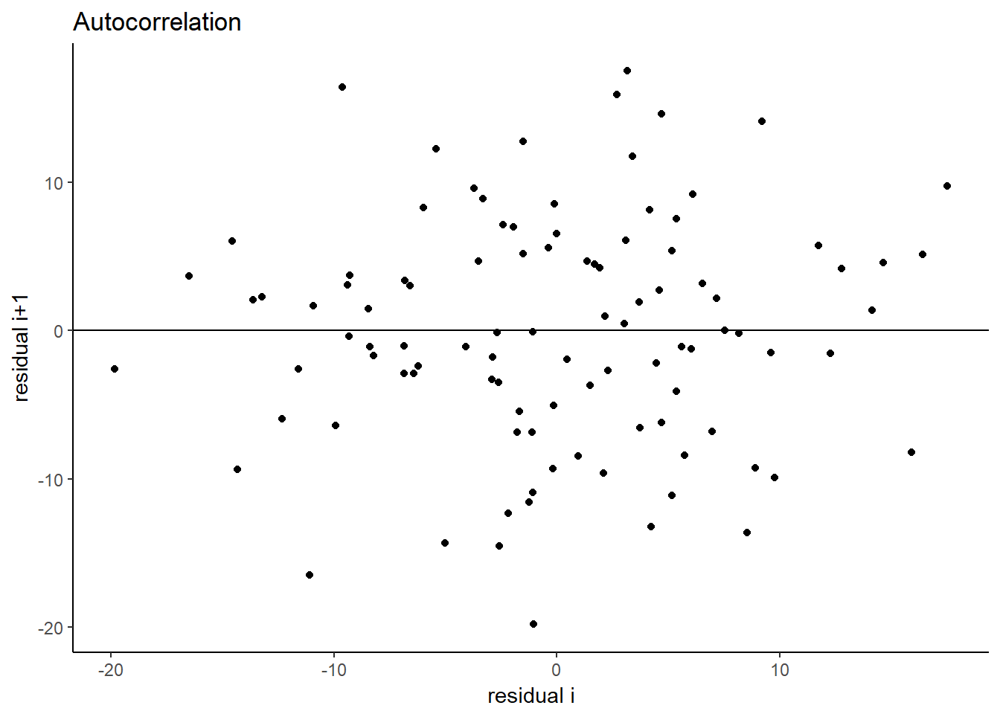
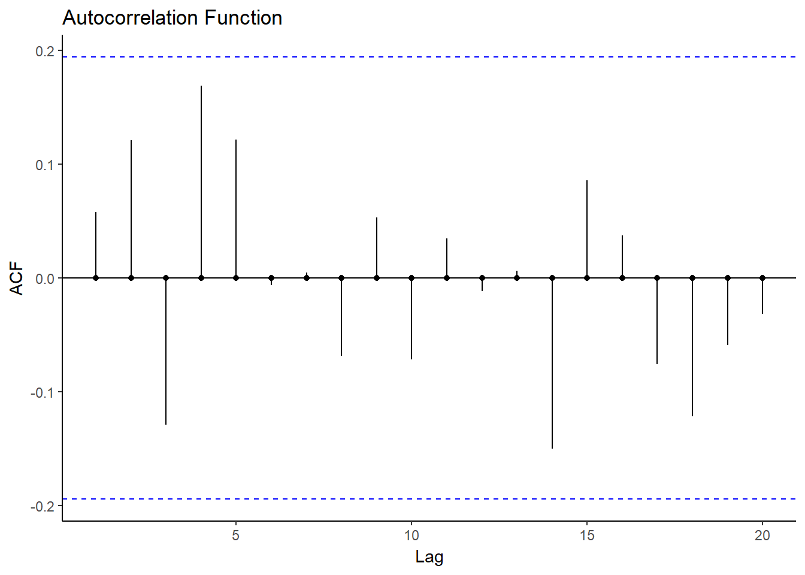

Model Diagnostics for Regression
Alicja Gosiewska
library(auditor)Validation of a regression model
library(car)
model <- lm(prestige~education + women + income, data = Prestige)
au## lm(formula = prestige ~ education + women + income, data = Prestige)
##
## Homoscedasticity of residuals
## Test statistic p.value
## Goldfeld-Quandt 1.83 0.0416
##
## Autocorrelation of residuals
## Test statistic p.value
## Durbin-Watson 1.87 NA
## Runs -1.39 0.165
plot(au)## $`1`
##
## $`2`
##
## $`3`
##
## attr(,"class")
## [1] "list" "ggarrange"